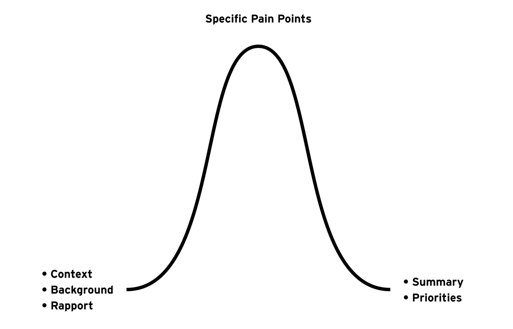
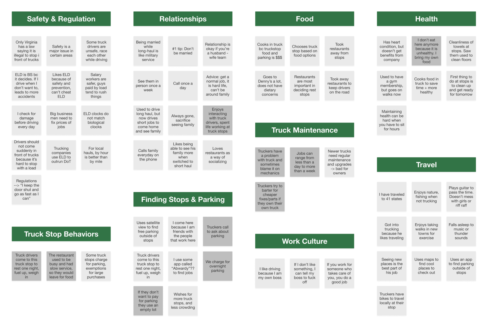
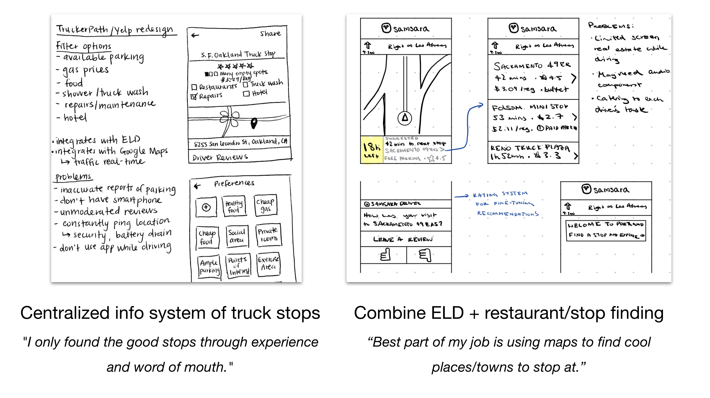
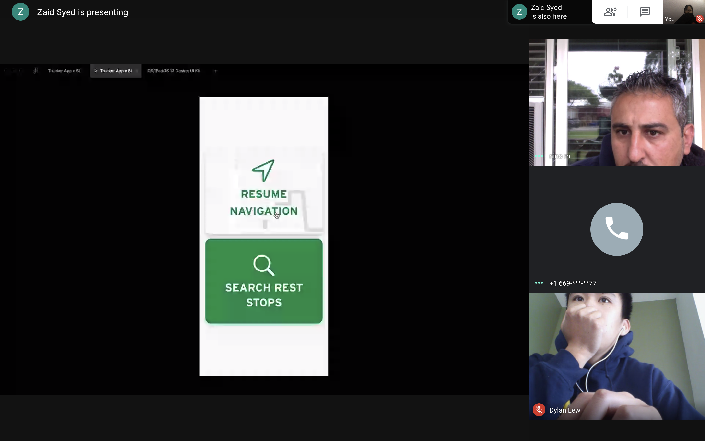

Context
The trucking industry is a powerful force that drives the U.S. economy. Businesses depend on the transportation of freight from warehouses to stores and homes.
Samsara is the leader in industrial IoT. Their mission is to improve the safety, efficiency, and productivity of the operations that power our economy.
In the spring of 2020, I worked with Dylan Lew, Phoebe Lin, and Zaid Syed to design turn-by-turn navigation that integrates with U.S. work hour regulation systems for Samsara's truck driver app.
The Problem
Samsara's Routes team proposed a general question: How might we improve the quality of life for long-haul truck drivers? Through user research, we narrowed the problem focus to navigation and rest stop finding. Currently, drivers use one app for turn-by-turn directions, another for timekeeping, and another for rest stop finding.
Our assumption, which we later validated through user testing, was that a seamless experience would help drivers stay on track and take care of themselves on the road.
How Might We...
User Research
Because we were unfamiliar with the trucking industry, we did secondary research to inform ourselves and get a solid background before talking to truck drivers.
Drivers operate on 4 clocks with strict penalties for violations:
This lifestyle can make it difficult for drivers to maintain their health, diet, relationships, and other areas of well-being.
We went to the Samsara office in San Francisco to work with Merlyn Fraga, a senior researcher who guided us. She taught us about activities and questions that use projective techniques, which let a person respond to ambiguous stimuli, presumably revealing hidden emotions and internal conflicts projected by the person onto the test.

For our first round of user testing, we went to the SF Oakland Truck Stop. Photos by me.
Synthesis
We created categories based on how often truckers mentioned the pain points, and organized our findings under them. Points from rest stop workers are shown in dark grey cards.

We compiled our most compelling findings into insights. We chose to design around the two categories that had the most potential for impact.
Low Fidelity Prototype
We brainstormed solutions around food, parking, and finding rest stops. We each fleshed out product goals and ideas based on the user needs.

Strategic Framing and Competitive Analysis
During ideation, we identified four product goals:
Our solution is turn-by-turn navigation that displays roads accessible to 18-wheelers and a search function that allows truck drivers to find rest stops with preferred amenities along their routes.
Current options have a disconnect between navigation and ELD. Google Maps, Apple Maps, and Waze display roads that are not accessible to 18-wheelers.
Mid Fidelity Prototype
High Fidelity Prototype
Thank you to Samsara Product Designers Emily White, Andrew Watterson, Bec Lai, Ishaan Kansal, and Stephen Kui for their continual feedback on our iterations. We met with them once a week, and they constantly pushed us to consider different perspectives and think through our design decisions.
ITERATIONS
TURN-BY-TURN NAVIGATION
SEARCH AND FILTER
REST STOP DETAILS
Engineering Constraints
For these experimental features, we wanted to use existing APIs and SDKs to quickly build the features and test its business value. Mapbox offers satellite views and turn-by-turn instructions. The Yelp API provides reviews, search results, and specific stop details.
Usability Testing
Due to COVID-19, we were unable to go to a rest stop to conduct usability testing in person. However, we were able to do a 45-minute video call with Nino M., a truck driver.

[To be continued] UNDER CONSTRUCTION